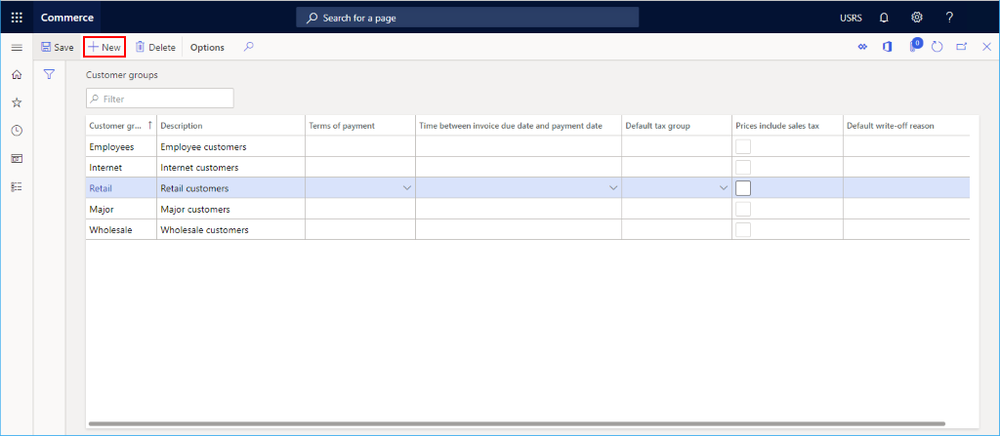
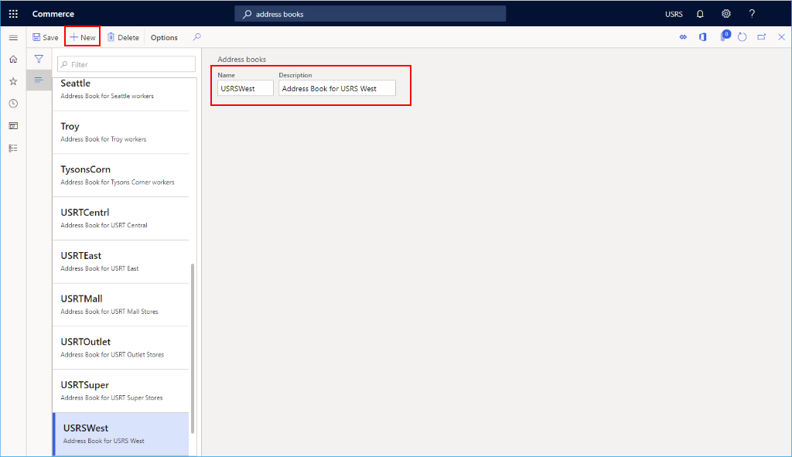
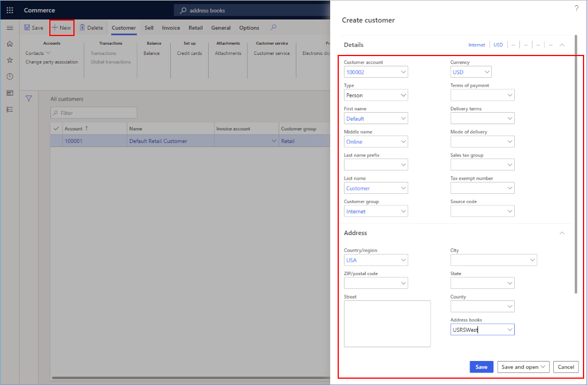
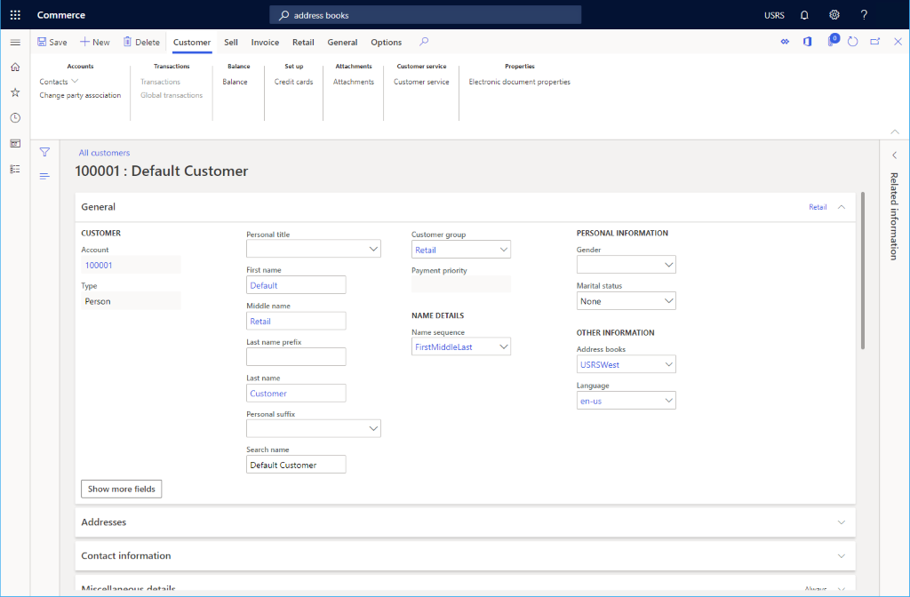
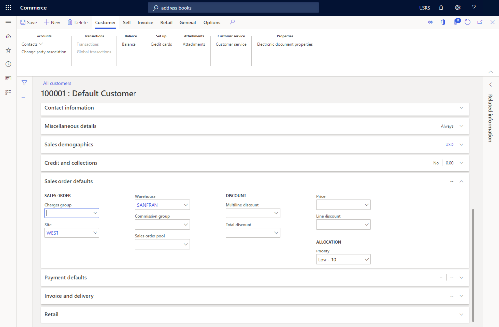

Create a default customer
This topic describes how to create a default customer to use when creating a channel in Microsoft Dynamics 365 Commerce.
Overview
When creating a channel, you will need to provide a default customer. A default customer can easily be created after first creating the customer group and customer address book.
Create a customer group
If no customer groups exist yet, you can create one. Examples may be groups to represent different customer groups, such as wholesale, retail, Internet, Employees, etc.
To create a customer group, follow these steps.
- In the navigation pane, go to Modules > Retail and commerce > Customers > Customer groups.
- On the action pane, select New.
- In the Customer group box, enter a customer group ID.
- In the Description box, enter an appropriate description.
- In the Terms of payment box, enter an appropriate value.
- In the Time between invoice due date and payment date box, enter an appropriate value.
- In the Default tax group box, enter a tax group if applicable.
- Select the Prices include sales tax check box if applicable.
- In the Default write-off reason box, enter an appropriate value, if applicable.
The following image shows several configured customer groups.

Create a customer address book
A customer needs to be associated with an address book. If one has not yet been created, then you will need to create one.
To create a customer address book, follow these steps.
- In the navigation pane, go to Modules > Retail and commerce > Channel setup > Address Books.
- On the action pane, select New.
- In the Name box, enter a name.
- In the Description box, enter a description.
- On the action pane, select Save.
The following image shows an example address book.

Create a default customer
To create a default customer, follow these steps.
- In the navigation pane, go to Modules > Retail and commerce > Customers > All customers.
- On the action pane, select New.
- In the Type drop-down list, select "Person".
- In the Customer account drop-down list, select or enter an account number (for example, "100001").
- In the First name drop-down list, select or enter a name (for example, "Default").
- In the Middle name drop-down list, select or enter a name (for example, "Retail").
- In the Last name drop-down list, select or enter a name (for example, "Customer").
- In the Currency drop-down list, select or enter a currency (for example, "USD").
- In the Currency drop-down list, select the customer group created previously.
- In the Address books drop-down list, select an existing customer address book.
- Select Save to save and return to customer details screen for the new customer.
Note
It is not necessary to add an address for a default customer.
The following image shows an example of customer creation.

The following image shows a default customer configuration.

Most of the default values on the customer detials screen can remain, but two values should be changed.
- On the customer details screen, expand Sales order defaults.
- In the Site drop-down list, select or enter a pre-configured site.
- In the Warehouse drop-down list, and select or enter a pre-configured warehouse.
The following image shows an example customer configuration.
